Galeria de Telas do StopRAM
Explore em alta resolução todas as interfaces que compõem o painel e controle da extensão.
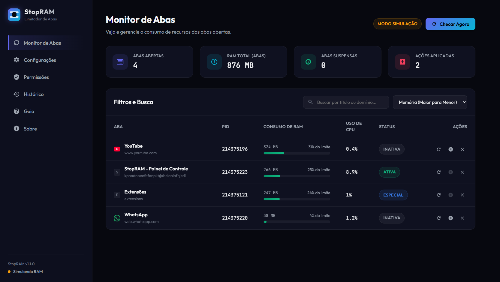
Monitor de Abas
Dashboard PrincipalO painel de monitoramento dinâmico em tempo real. Exibe todas as abas abertas e seus consumos (RAM, CPU, PID), com alertas de consumo críticos em vermelho/laranja e badges de status. Permite recarregar, suspender ou fechar abas individualmente.
O dashboard em tempo real com estatísticas de consumo de RAM e CPU.
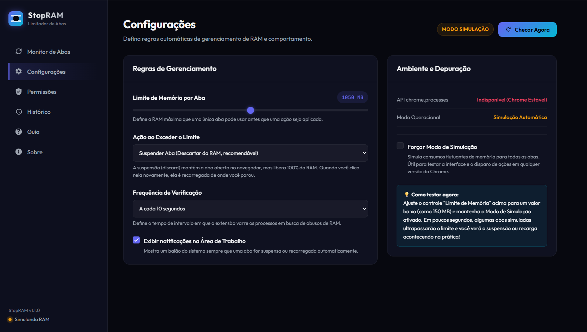
Ajuste de limite de RAM (em MB), intervalo de checagem e modo experimental.
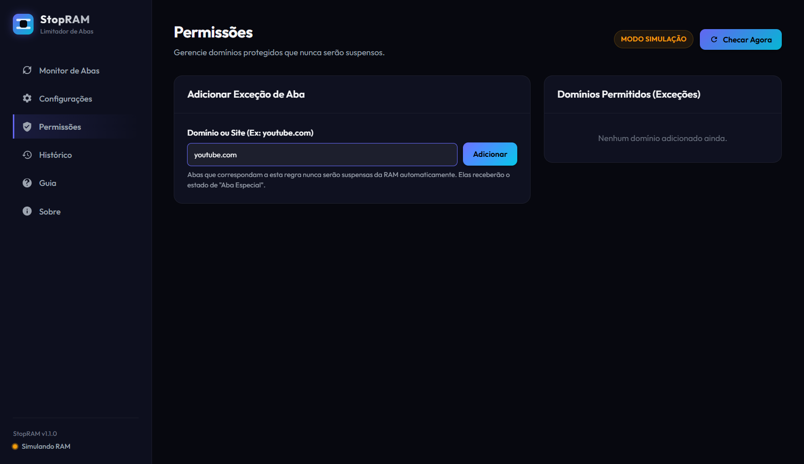
Barra de ferramentas de acesso rápido na barra de extensões do Chrome.
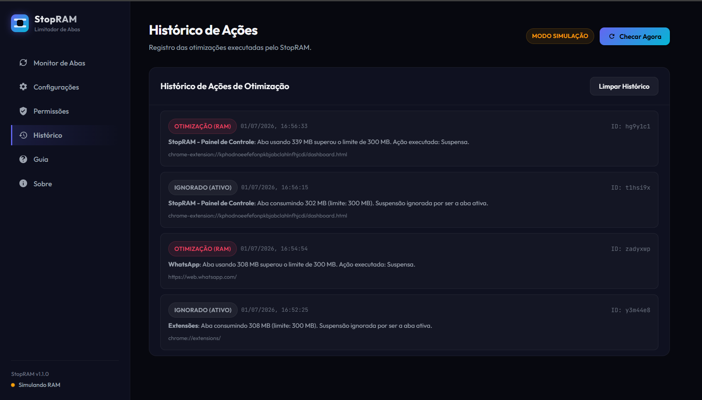
Proteção customizada de domínios específicos contra suspensão de RAM.
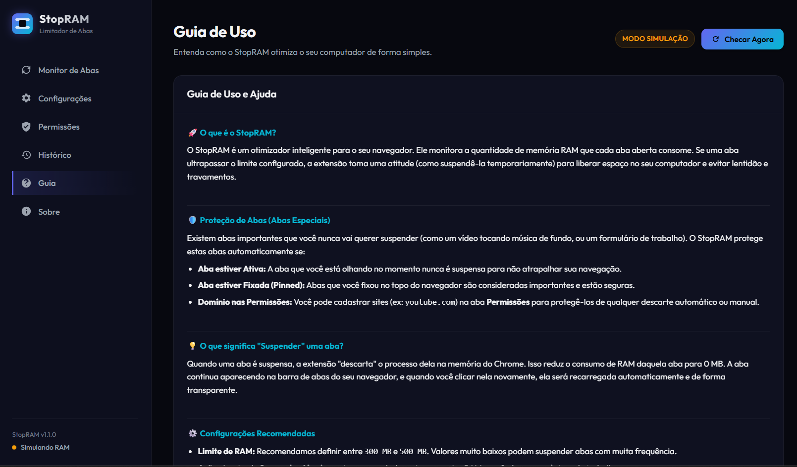
Logs de auditoria das suspensões, recargas ou skip de abas ativas/especiais.
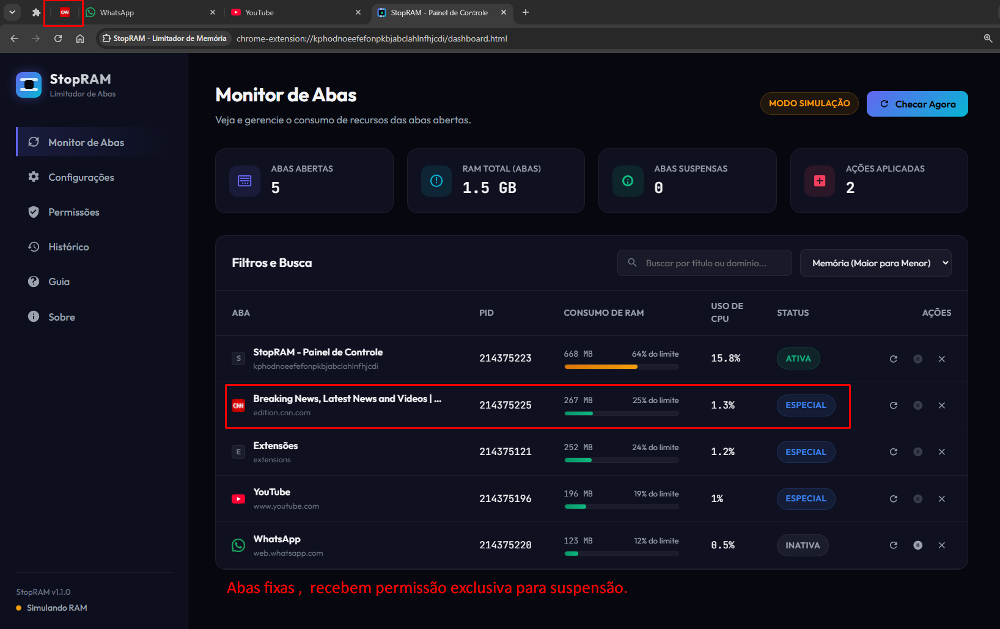
Instruções de uso, notas legais de licença não comercial e contatos do autor.
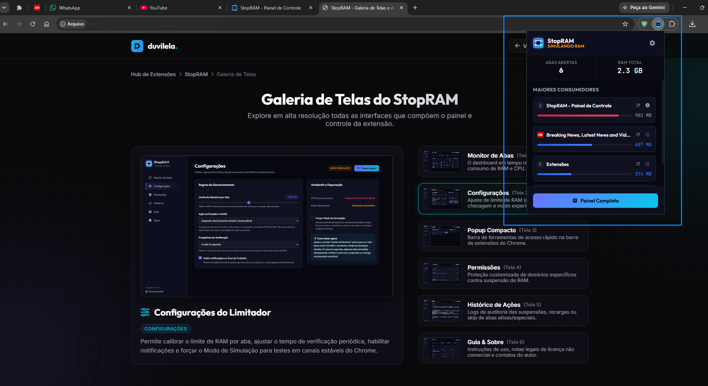
Acesso rápido fixado na barra superior do navegador Chrome.
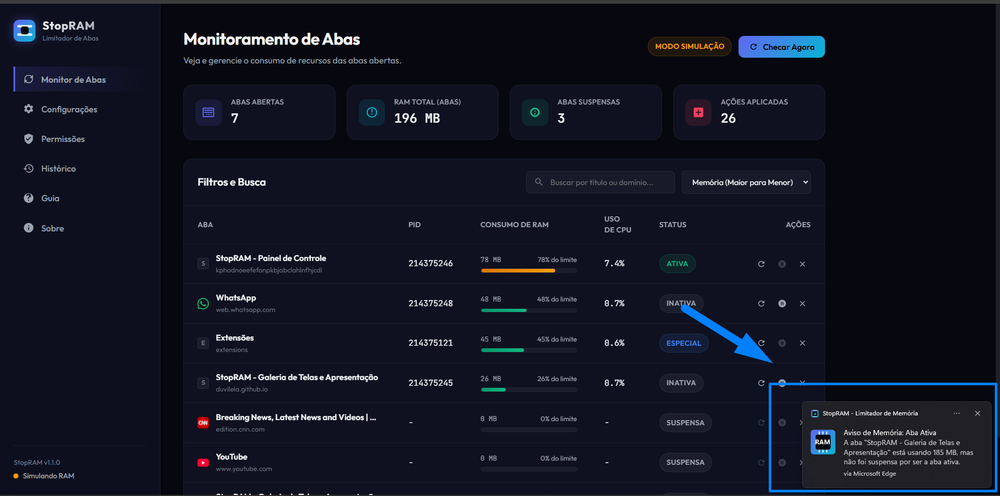
Alertas visuais disparados ao suspender, recarregar ou pular abas.
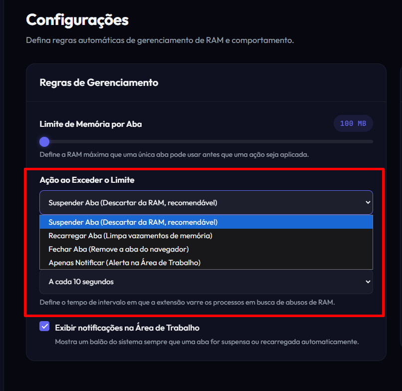
Controle deslizante para limitar a memória por aba (100 MB a 2 GB).
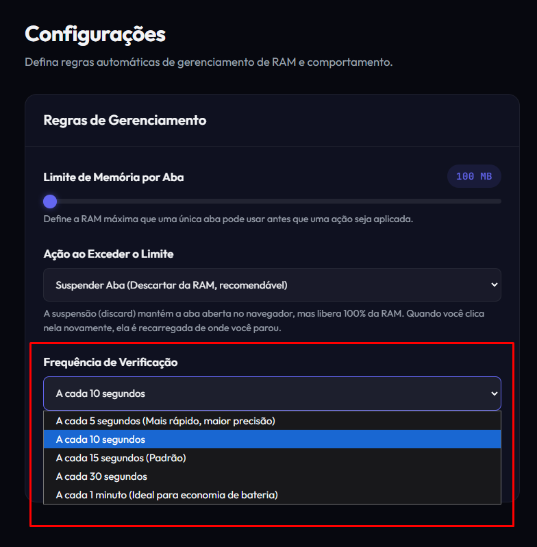
Ajuste do loop de varredura (de 5 segundos a 1 minuto).
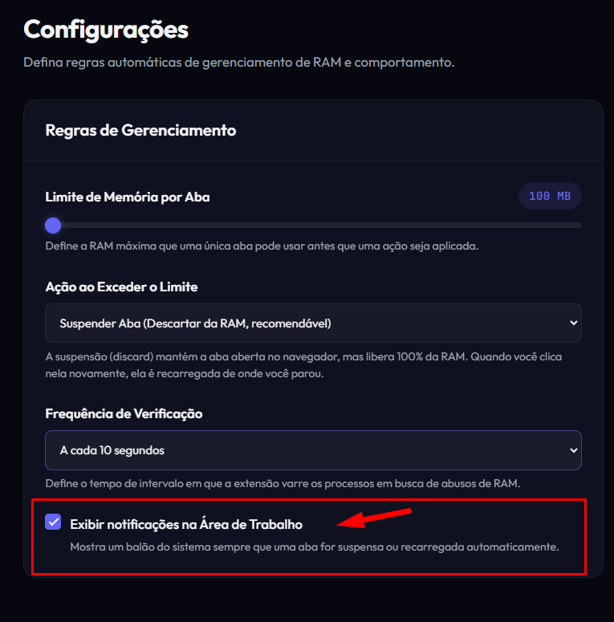
Interruptor para otimização 100% silenciosa sem balões de notificação.